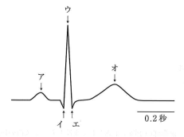
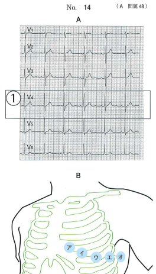

心電図は心臓の電気的活動を記録したもので、各波形には以下の意味がある。
| 波形 | 意味 | 関連する構造 |
|---|---|---|
| P波 | 心房の脱分極（興奮） | 洞房結節→心房 |
| PQ間隔 | 房室伝導時間 | 房室結節での遅延（0.12〜0.22秒） |
| QRS波 | 心室の脱分極（興奮） | ヒス束→プルキンエ線維→心室 |
| ST部分 | 心室の活動電位プラトー相 | 心筋虚血で異常 |
| T波 | 心室の再分極 | 心室筋の興奮回復 |
心筋虚血時にはST部分に特徴的な変化がみられる。
体を前から見たときの心臓の電気的活動を測定。
体を輪切りにして見たときの心臓の電気的活動を測定。
| 誘導 | 電極位置 |
|---|---|
| V1 | 第4肋間胸骨右縁 |
| V2 | 第4肋間胸骨左縁 |
| V3 | V2とV4の中間 |
| V4 | 第5肋間左鎖骨中線 |
| V5 | V4の高さで左前腋窩線 |
| V6 | V4の高さで左中腋窩線 |
| 種類 | 特徴 |
|---|---|
| 1度 | PQ間隔延長（>0.22秒）のみ |
| 2度 | 時々QRS波が脱落 |
| 3度（完全） | P波とQRS波が完全に解離 |
3極誘導心電図の波形で心筋虚血時に異常がみられるのはどれか。1つ選べ。
【解説】心筋虚血時にはST部分に異常がみられる。ST低下やST上昇が特徴的。PQ間隔は房室伝導時間、QRS幅は心室内伝導時間、RR間隔は心拍数に関連する。
健常成人の第Ⅱ誘導心電図波形を図に示す。
心室筋の再分極を示すのはどれか。1つ選べ。

【解説】図中の波形は、ア＝P波（心房脱分極）、イ〜エ＝QRS波（心室脱分極）、オ＝T波（心室再分極）である。心室筋の再分極を示すのはT波。
成人の正常な安静時12誘導心電図波形（胸部誘導）（別冊No.14A）と胸部の模式図（別冊No.14B）を別に示す。
①の心電図波形を導出する電極の位置はどれか。1つ選べ。

【解説】①はV4の波形を示している。V4の電極位置は第5肋間左鎖骨中線であり、図中の「ウ」に相当する。V4は胸部誘導の基準となる位置で、V5・V6はV4と同じ高さに設置する。